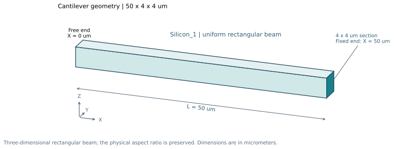
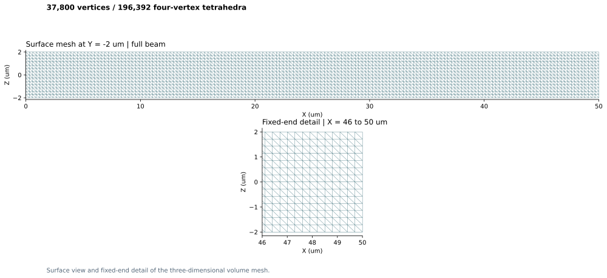
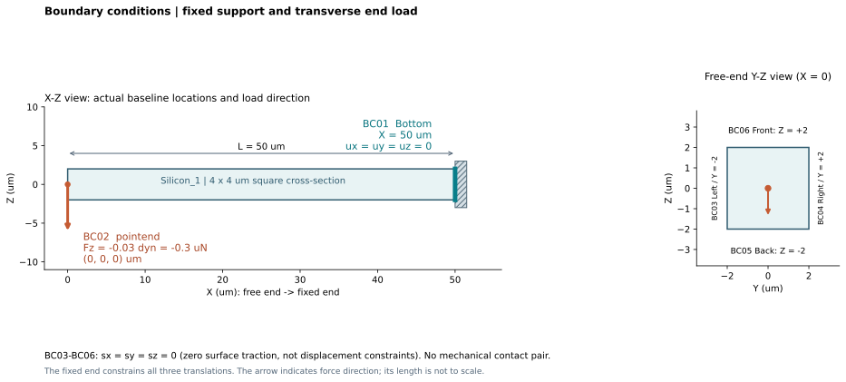
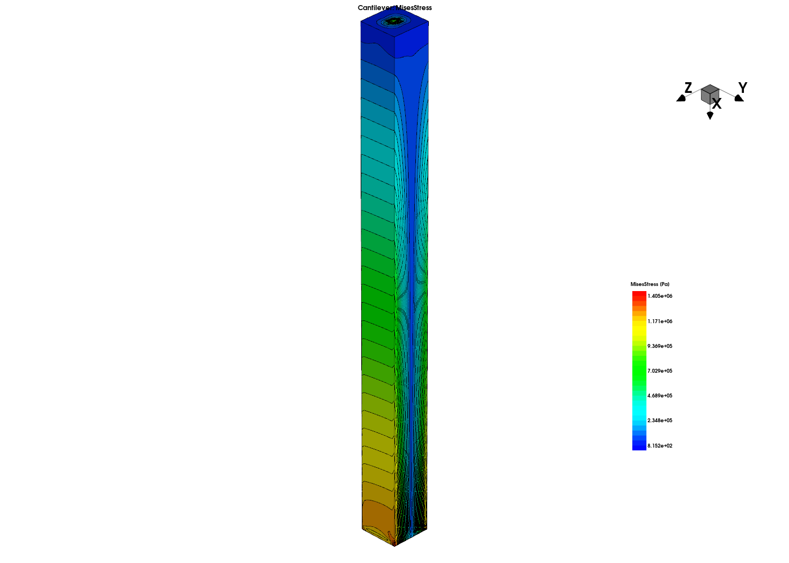
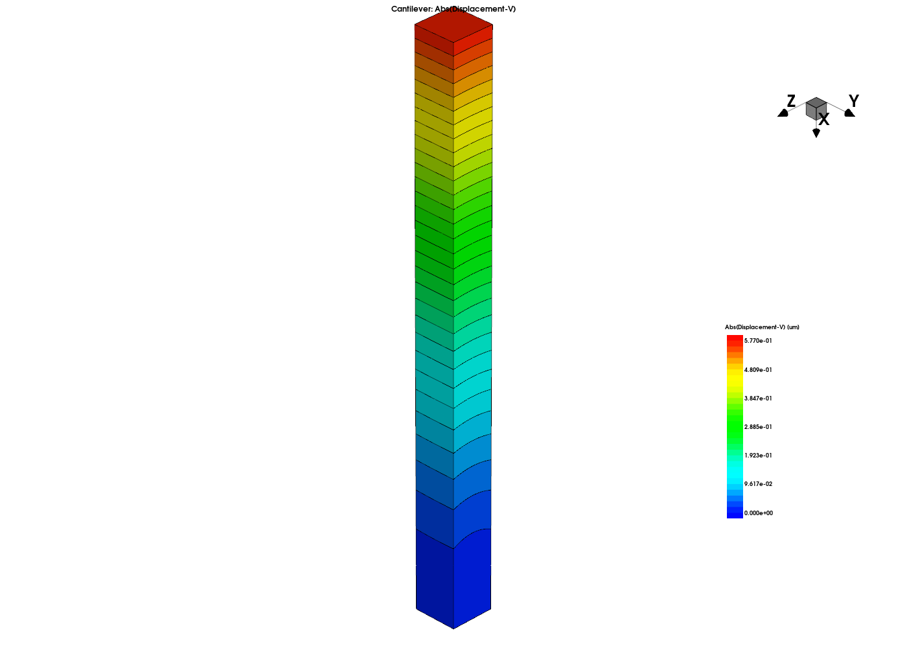

- Status
- Matched
- Mode
mode mechanics
Cantilever
Example: Cantilever With End Load (3D)
SIMULATION CASE REPORT
A 3D cantilever under a transverse end load: understand how the beam bends, how far its free end moves, and how stress is distributed along its length.
50 μmBeam length · axial direction X
4 × 4 μmSquare cross-section · Y and Z
37,800Mesh vertices
196,392Volume tetrahedra
Background1 · Geometry2 · Mesh3 · Elastic bending4 · Boundary conditions5 · Numerics6 · Results7 · Other features8 · GT-A / converter
Background · a beam-bending example
This training-manual example models a slender, homogeneous beam fixed at one end and loaded at the other. It demonstrates the displacement response and bending-stress field of a simple microscale structure.
Source: “Cantilever With End Load (3D)”, Applications_Library/GettingStarted/sinterconnect/3D_Cantilever. The working input preserves the rectangular geometry, elastic constants and load configuration of the archived reference.
1 · Geometry and scale
The model is a three-dimensional rectangular beam, 50 μm long with a 4 × 4 μm square cross-section. X runs along the beam from the free end at X = 0 to the fixed end at X = 50 μm. Y and Z both span −2 to +2 μm. The single material region is Silicon_1.

Geometry evolution: none. The beam geometry stays fixed during model construction and the mechanics calculation. A deformed-coordinate export is used to visualize the resulting displacement.
Idealization: a straight, prismatic beam with uniform properties, a perfectly fixed support and a point-applied load. Fillets, surface roughness and a finite load-introduction area are omitted.
2 · Mesh
| Setting | Value |
|---|---|
| Line-spacing control | 0.3 μm in X, Y and Z, with additional coordinate lines at Y = 0 and Z = 0. |
| Realized coordinate intervals | ΔX ≈ 0.299401 μm; ΔY = ΔZ ≈ 0.285714 μm. |
| Mesh size | 37,800 vertices and 196,392 volume elements. |
| Topology | Four-vertex tetrahedra in one bulk region. The input does not explicitly specify the solve-time interpolation order. |
| Local treatment | No local refinement, boundary layers or adaptive remeshing are specified. |

3 · Physics: elastic bending
The central mechanism is elastic bending. The transverse force moves the free end toward −Z, while the fixed end supplies a reaction force and moment that balance the load. Bending stretches one side of the beam and compresses the other, producing stress.
The beam’s displacement is greatest at the free end. The bending moment grows toward the fixed end, so nominal bending stress is largest near the support and at the outer fibers of the cross-section.
The calculation uses mode mechanics to solve three-dimensional static elastic equilibrium for displacement; stresses follow from the resulting strain. There is no thermal or electrical coupling. The material is isotropic elastic, with Young’s modulus E = 1 GPa and Poisson’s ratio ν = 0.2; these example values override the constants associated with the Silicon material name.
For a slender beam, the familiar tip-deflection estimate summarizes the dependence on load, length and bending stiffness:
δtip ≈ |Fz| L³ / (3 E Iy)
Here L is the beam length and Iy is the cross-section’s second moment of area about Y. A longer beam bends much more; a higher Young’s modulus or a larger section moment makes it stiffer. This explains why both the material stiffness and the 50 × 4 × 4 μm geometry matter for the response.
4 · Boundary conditions and load
The X = 50 μm end is fixed. A concentrated force acts at the free-end center, (0, 0, 0) μm, along −Z. Its magnitude is 0.03 dyn = 0.3 μN.

| Boundary | Location | Condition |
|---|---|---|
| BC01 · Bottom | X = 50 μm | dx = dy = dz = 0. |
| BC02 · pointend | (0, 0, 0) μm | pfx = pfy = 0; pfz = −0.03 dyn. |
| BC03 · Left | Y = −2 μm | Zero surface traction: sx = sy = sz = 0. |
| BC04 · Right | Y = +2 μm | Zero surface traction. |
| BC05 · Back | Z = −2 μm | Zero surface traction. |
| BC06 · Front | Z = +2 μm | Zero surface traction. |
Boundary conditions are assigned directly to the named exterior faces through stressdata bc.location. The point load uses point.coord. No separate contact definition or mechanical contact pair is used.
5 · Numerics
The input requests one mechanics solve without case-specific tolerances, iteration limits or solver-selection overrides. It contains no explicit numerical-parameter toggle or parameter sweep.
6 · Displacement and stress
Displacement is the solved variable. The main quantities of interest are the free-end deflection and the von Mises stress field. The field plots illustrate displacement increasing toward the free end and bending stress developing along the beam.

MisesStress · displayed color scale: approximately 8.152e2–1.405e6 Pa.

Abs(Displacement-V) · displayed color scale: 0–0.577 μm.
The sharp fixed-end edges and concentrated load can produce localized stresses. Their local peaks should be interpreted with the mesh and idealized load geometry in mind.
7 · Other features
| Case feature | How it is used | Feature catalog |
|---|---|---|
| Deformed-coordinate visualization | Export the displaced geometry with deform.scale=5.0 to make the bending shape easier to inspect. | Field visualization · deformation scale |
| Centerline displacement extraction | Select Displacement_z and extract along X at Y = Z = 0 using plot.1d. | Field output · spatial data cuts |
8 · GT-A benchmark and si_converter
| Item | Case status |
|---|---|
| GT-A benchmark | Numerical equivalence has not yet been validated. |
| si_converter | The mesh, elastic material, fixed support and end point load are represented in the converted model. End-to-end solving and the requested post-processing outputs remain unverified. |